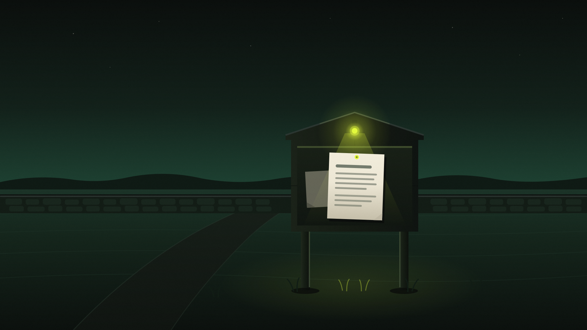

The great Claude ‘leak’ was a noticeboard, not a burglary.
Shared Claude conversations surfaced in Google search results and the press reached for the air-raid siren. Here is what actually happened, and why your private chats were never touched.

How deep do you want to go? Pick a level and the article rewrites itself.
Last weekend the internet discovered that some Claude conversations could be found on Google, and sections of the press reacted as though the machines had rifled through the nation's sock drawers.
“Privacy nightmare.” “Exposed.” “Your secrets, searchable.” The headlines were having a wonderful time.
Here is the sentence the headlines mostly forgot to include: nothing was hacked, and no private conversation was leaked. Every single chat that appeared on Google was one where the owner had pressed a button marked “Create public link”.
That distinction matters enormously, because half the country is currently deciding whether these AI tools can be trusted, and stories like this one, told badly, are doing more damage than the technology is.
So let's tell it properly. Slowly, with tea.
What actually happened?
Claude, made by Anthropic, has a share feature. When you have a conversation you'd like to show someone, perhaps a plan, a recipe or a bit of code, you can turn it into a link and send it to them. The same goes for Artifacts, the little documents and mini-apps Claude can build.
On Saturday 25 July, a Reddit user noticed that typing a particular search into Google, the kind that asks Google to show everything it knows from claude.ai's share pages, returned a long list of these shared conversations. 404 Media and TechCrunch reported it on the Monday.
Some of what turned up was genuinely uncomfortable. Futurism found a detailed medical report, clinical trial results including patient names, documents listing the names and phone numbers of primary-school-aged children, and company files marked internal use only.
By Monday afternoon, TechCrunch ran the same search and got nothing back. From flag to fix: roughly two days.
Was Claude hacked?
No. And this is the bit worth reading twice.
Nobody broke into Anthropic. No password was stolen. No server was breached. No AI went rogue, developed opinions, or sold your secrets to a man in a van.
Every conversation that appeared in Google's results was one where a person had clicked “Create public link”. Anthropic's statement put it plainly: the company doesn't hand Google a directory of chats, and the links themselves are not guessable. They only end up in a search engine when somebody posts them somewhere public: a forum, a social media post, a website.
The word “exposed” did a great deal of heavy lifting in last week's coverage. “Published and then found” is closer to the truth, and considerably less cinematic.
Nobody picked a lock. Someone pinned a notice to the village hall board and was startled that the village read it.
What is a public link, really?
Think of your Claude account as your farmhouse. Your conversations live inside it. Nobody gets in without your key. That part hasn't changed and didn't change last week.
A share link is different. Creating one is like copying a page of your diary and pinning it to the noticeboard outside the village hall. The copy is public. That is the entire point of it: it's how the person you sent it to can read it without logging in.
Now, the noticeboard sits down an unmarked lane. Nobody is going to stumble across it by accident; the address is a long jumble of letters no one could guess. But if you, or the friend you sent it to, mentions that lane anywhere public on the internet, Google's crawler will find it. The crawler is best imagined as a tireless postman who reads everything and files a copy at the sorting office. He isn't malicious. He's just extremely thorough, and he never sleeps.
That's what “indexed by Google” means. Not stolen. Filed.
Once you know that, the whole story deflates rather quickly. People pinned notices, the postman filed them, and everyone was horrified to find them at the sorting office.
So whose fault is it?
Some of it does sit with the products, and it's fair to say so.
A button that says “anyone with the link can view” does not scream “this may end up on Google next to the weather”. TechCrunch pointed out that Google Docs offers much the same feature and those documents don't wind up publicly searchable in the same way. Design nudges matter, and this one could be blunter.
It's also not the first time. Last September, Google estimated it had indexed just under 600 Claude conversations in a near-identical flap. And in 2025 a researcher scraped around 100,000 publicly shared ChatGPT conversations from Google. The industry keeps re-learning the same lesson, which is not a flattering look for an industry that talks this much about intelligence.
But the other half of the story is human, and older than the internet: people put sensitive things in a public place without reading the label. Patient names and children's phone numbers should never have been pasted into any tool and then shared, AI or otherwise. That's not a Claude problem. That's a filing problem.
Should you stop using AI?
Here's the question the scary headlines are really planting, so let's answer it directly.
No. And the reasons are worth spelling out.
First: your ordinary chats were never at risk. If you never pressed share, nothing of yours was findable. That remains true today.
Second: the AI did nothing here. Claude didn't decide to publish anything, didn't leak anything, didn't act at all. This story would be identical for any website with a share button: recipe sites, photo albums, document tools. The AI part is what got it into the headlines; it isn't what made it happen.
Third: the problem was found by ordinary users, reported by journalists, and shut down in about two days. That's the system working, if a touch late.
Refusing to use AI because of this story is like refusing to drive a tractor because someone, somewhere, once left a handbrake off. The sensible response is not to abandon the tractor. It's to check the handbrake.
Fear the handbrake you forgot, not the tractor.
What rolling AI out at work taught me
My day job, for the past while, has included leading AI adoption inside a business: the tools, the training, and the rules of the road. And I can report that the risks that actually show up bear no resemblance to the ones in films.
No model has ever tried to seize the payroll. What does happen, constantly, is human and mundane: someone pastes a sensitive document into a tool without thinking, or shares a link wider than they meant to, or gives an app access to far more than it needs. Every real incident I've seen worried about a person and a permission, not a machine and a motive.
So the controls that work are equally mundane. Decide what may and may not be pasted into which tool, and write it down in plain English. Give tools access to the one drawer they need, not the whole filing cabinet. Show people what the share button actually does. Once someone has seen it, they never un-see it. Ten minutes of that beats a hundred fearful headlines.
The teams that get real value from AI aren't the fearless ones. They're the ones who read the labels on the buttons. Fear produces avoidance; familiarity produces care. You want care.
Check your own noticeboard
The practical bit, and none of it is difficult:
- Review your shared chats. In Claude: Settings → Privacy → Shared Chats. Delete anything that shouldn't be public. Other chatbots have an equivalent page. Find it once and you'll know where it lives.
- Treat share buttons like postcards. Assume anything you share could be read by the postman. If that thought bothers you, don't share it. Copy and paste the text instead.
- Keep the crown jewels out entirely. Medical records, other people's personal details, anything marked confidential: these don't belong in a chat you might one day share, whatever the tool.
- Then carry on using it. Genuinely. The tool didn't misbehave, and it remains as useful this week as it was last week.
One caveat for completeness: things that were public for a while can linger in caches and web archives even after they vanish from search results. Another reason for the postcard rule, and another reason it applies to the whole internet, not just AI.
The machines are not reading your diary. But if you pin your diary to the village noticeboard, do be prepared for the village to read it.
The lesson is not that AI leaks. It is that public means public, and buttons deserve reading.
Go deeper, then get the next issue in your inbox.
The full write-up is on Substack: the mechanics of how search engines find share links, the 2025 precedents, and what it means if you run AI in a business. Subscribe and each new issue lands in your inbox. Practical, evidence-led, no hype.